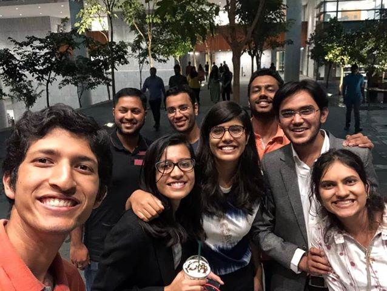

September 2, 2019
Anurag Pandey, a final year undergraduate from the department of Mathematics and Scientific Computing pens down his experience of the summer internship at Goldman Sachs, Bangalore. He recollects his journey, breaks some notions and sheds some light on how to grab your dream intern in this blog. He also tells how one can make the most out of the internship.

Hello people ! I am Anurag Pandey, a final year undergraduate
in the department of Mathematics and Scientific Computing. I
interned at Goldman Sachs, Bangalore as a Summer Analyst in
Risk Division.
Talking about career, internships play a vital role in helping
one decide what to go for, or atleast what not to go for.
Before digging deeper into various options, one needs to
figure out if it has to be an academic or industry intern. In
my case, I had already tried academia in my second year that I
wanted something a bit more fast paced. Hence I chose to go
for an industry intern in the third year summers.
Well, most of the people in our campus take the intern season
lightly and do not prepare. I think this needs to change. One
thing which I realized during the entire internship season is
that the companies usually do not want the best guy, they just
want a guy suitable for their job. So a good enough
preparation would definitely prove useful. In my case I
started my preparation somewhere near early July.
 I knew I had an interest in algorithms and mathematics, so I
decided to go for the software and analyst roles. Among the
offers I had on day 1, Goldman seemed to me a pretty good
choice as it is a big name ( and also a lucrative offer xD ).
I knew I had an interest in algorithms and mathematics, so I
decided to go for the software and analyst roles. Among the
offers I had on day 1, Goldman seemed to me a pretty good
choice as it is a big name ( and also a lucrative offer xD ).
Talking about the selection procedure, Goldman Sachs comes on
day 1 of the intern recruitment drive. There is an initial
screening test consisting of coding and quant problems,
followed by a couple of rounds of interview. The difficulty
level of problems asked in the screening test and interview
are somewhere from moderate to difficult. But then you can
surely do well with a decent level of preparation.
Coming to the most important part - life at Goldman Sachs !
For those of you who do not know, Goldman Sachs is one of the
biggest Investment Bank in the world and it also offers a
variety of other financial services.
There is a common notion in the campus community that Goldman
follows strict formals culture and has long working hours.
That is not exactly true. It is more or less team dependent.
But then from what I experienced, most of the teams are okay
with casuals. As far as long working hours is considered, you
can come and go anytime as long as your project is going on
track. But then you would want to spend most of your time on
the weekdays in office - going to the gym or bulla sessions
with seniors and/or co-interns in the cafeteria, if not
working. Also very rarely in some of the teams, you are
required to come to office on Saturdays, otherwise it is
usually a 5 days a week.

The next best thing
about Goldman is flat hierarchy. Everyone in the team right
from interns to the VPs used to sit together side-by-side on
the same table.
There is no cubicle system. You can approach anyone with any
doubts. Also the projects you would be working upon won’t be
some dummy projects. You would be working on certain aspects
of a bigger ongoing project. They make sure that it has got
sufficient learning for the intern and that the project is
doable. Goldman believes in grilling you to bring the best out
of you. At times you might feel that you cannot accomplish the
task, but then you should keep going and seek help, if
necessary. The feeling when you accomplish these challenging
tasks is unparalleled.
Other perks of working in Investment banks is you get to party
a lot ! I remember having a team party atleast once in a
fortnight! We went for sports, escape room, restro bars, and
house parties. Also it is usually sponsored by the firm or
seniors, which further adds to the fun xD.
To sum up, this summer was like a roller coaster ride - full
of ups and downs, but at the end the experience was something
worth remembering.
 Third year summer intern is also important from other
perspectives apart from career. So you should not just
completely dive into work, with the goal of PPO, but also set
time aside to explore the place, talk to new people, make
connections and also get to know yourself in a better fashion.
These things will be far more valuable in the long run than
some PPO which saves you from four months of hard work during
the placements. So make sure whatever you do, you make the
best out of it. If not much, at least it should be a time you
look back to with a smile on your face.
Third year summer intern is also important from other
perspectives apart from career. So you should not just
completely dive into work, with the goal of PPO, but also set
time aside to explore the place, talk to new people, make
connections and also get to know yourself in a better fashion.
These things will be far more valuable in the long run than
some PPO which saves you from four months of hard work during
the placements. So make sure whatever you do, you make the
best out of it. If not much, at least it should be a time you
look back to with a smile on your face.
For the freshmen and sophomores reading this, do not neglect
CPI at anypoint as it eventually matters at a number of places
if not all. Have fun during your stay in campus but meanwhile
also connect to a number of professors and seniors and explore
anything and everything that you want to.
Good luck everyone with all your future pursuits ! Feel free
to reach out to me if you want to discuss any of these things.